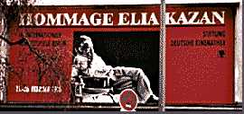
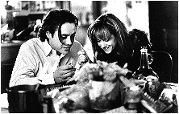

46th Berlin International
Film Festival (1996)
feature by Eddie Cockrell
Berlin at 24 Frames a Second
The weather is cold and the films are hot as the 46th Berlin International Film Festival hits
day six (February 20th) in full stride. As promised by the quality of the main competition
section, the star power is strong and dominates the news: today will find esteemed Polish
director Andrzej Wajda presenting the German prcmiere of his new film Wielki Tydzien
(Holy Week) and Oliver Stone meeting the press following the first European showing
of Nixon.
John Travolta
celebrated his 42nd birthday on Sunday (18th) in the midst of the festival fray, and
competition entry Get Shorty (known in German by the
far catchier title Schnappt Shorty) co-star Danny De Vito beefed to the press
that Babe elbowed his film out of Best Picture Oscar contention and gloated over
his discovery of a Berlin bistro that serves nothing but beer and donuts. That and a
steady diet of films are all one needs - just ask retrospective subject Elia Kazan (On
the Waterfront), who fell asleep in one of the multitude of screening rooms in the
main Cine Center and was lost to his festival handlers for nearly 90 minutes. No word on
which movie induced his peaceful state.
Before diving deeper into the
diversity of the festival schedule, consider the unique case of Robert Downey Jr. Star of
no fewer than three of the films in the main programme (Home for the Holidays, Richard
III and Restoration), Downey Jr. isn't exactly endearing himself to the
working press or the German public: word is he cancelled a large chunk of his interview
schedule and showed up ten minutes late (an eternity to the punctual German way of
thinking) for the public première of Restoration on Sunday.
But while the man may want for social graces, his movies have
captured the European fancy and exhibit an actor in strong form. Jodie Foster's Home
for the Holidays is one of those satires of American family life that are so accurate
that stateside critics and audiences couldn't see it (the forest for the trees syndrome)
and treated the picture accordingly. Not a defense of an admittedly heavy-handed farce,
but a way of contextualising the festival reaction, which was slightly ecstatic. Downey
Jr. works well in an ensemble, but the film is the least successful of the three.
On
the other end of the spectrum, Richard III (dubbed "Dick Three Dies Hard"
by one press wag) blew even the most jaded of the press corps away with its visceral
approach to the bard and sumptuous production design. Firmly anchored by Ian McKellen's
delightfully wicked turn as the title character (shame on Oscar for freezing him out in
favour of Richard Dreyfuss' treacly Mr. Holland), the movie features Downey Jr. in brief
but memorable support. Fittingly, Restoration was the third of Downey Jr.'s films
to bow, and the warmly received movie is perhaps his most fully-realised performance to
date. As flawed but intrepid Doctor Robert Merivel, Downey Jr. shines as a man whose
personal journey to maturity and happiness is set against the backdrop of the tumultuous
mid-1600s. The film vividly recreates the pageantry of the period as well as the horrors
of the bubonic plague and the tragedy of London's great fire of 1666.
 Interestingly enough, Restoration has much in common with
Dick Thre... pardon, Richard III: Ian McKellen supports Downey Jr. in the cast
and both films share Oscar nominations for Art Direction and Costume Design (Richard
III deserves the former, Restoration the latter). The film is an appropriate
choice for the opening of the Cinema lOO season in London on March 7th, as it is a
stirring example of the quality of big-budget commercial filmmaking in England.
Interestingly enough, Restoration has much in common with
Dick Thre... pardon, Richard III: Ian McKellen supports Downey Jr. in the cast
and both films share Oscar nominations for Art Direction and Costume Design (Richard
III deserves the former, Restoration the latter). The film is an appropriate
choice for the opening of the Cinema lOO season in London on March 7th, as it is a
stirring example of the quality of big-budget commercial filmmaking in England.
Contrary to appearances, it is
possible to work non-stop for the festival's twelve days in blissful ignorance of the
competition section and its attendant hoopla. And it is a hard fact of festival life here
that one will want to see far more movies than one has hours in the day, and life quickly
becomes regulated by starting times and theatre locations.
A curious by-product of this mind-set manifests itself about now: most heavy moviegoers
(four or more features a day and snatches of many more) become absolutely convinced that
they've chosen all the wrong films and their colleagues are off somewhere seeing more and
better movies - the grass is always greener... A measure of Berlin's success this year is
that so far this phenomenon has been held in check, as, to put it plainly, the good movies
far outnumber the bad. So far, anyway.
Making sense of the complex
screening schedule requires some familiarity with the individual sections of the festival.
Outside the competition the largest public programmes are the International Panorama (divided
into Art & Essay, Documentaries and Panorama Specials), the International
Forum, the Children's Filmfest, and the Retrospectives (this year
William Wyler, Elia Kazan and Jack Lemmon). A New German Cinema section caters to
buyers in search of the best in recent domestic production, and the European Film
Market is where most of the serious business of buying and selling is done.
Perhaps the most difficult sections for the first-time visitor to understand are the
Panorama and the Forum, as they are familiarly known. In eleven short years, programmer
Wieland Speck has moulded his personal tastes and the demands of the Berlin moviegoing
audience into a stimulating and courageous selection of some 35 films that are strange
bedfellows indeed: John Schlesinger's An Eye for an Eye and John Dahl's Unforgettable
screen alongside new features from Israel, South Korea, South Africa and elsewhere.
"I'm exhilirated at the response so far," Speck said during a brief encounter on
the way to another screening, his spirits undampened by a fracas that resulted when a
throng was turned away from the packed-out première of the new German film Sexy Sadie.
The single most
challenging (and often most rewarding) section of the festival is International Forum
of Young Film, a selection of films that are young only in the sense that "they
challenge us to look for new horizons, enrich the film language or hold a critical mirror
to our society". That's Ulrich Gregor (co-director of the Festival), who, along with
his wife Erika, personally select the more than one hundred features and shorts in the
programme.
Some snapshots from the cinemas of Berlin:
Lumière et Compagnie (Lumière and Company), in the
Art & Essay section of the Panorama, shows what happens when forty-some of the world's
prominent film directors are allowed to use the very same Kinematograph with which, a
century ago, the Lumière Brothers pioneered cinema as we know it. The rules: a single
shot of 52 seconds duration, three takes only and no artificial lighting. Among the
participants: Jacques Rivette, Spike Lee, James Ivory and David Lynch. Among the
pleasures: observing the peculiar temperaments of filmmakers as they go about their work
and realising the challenges of the primitive machine and the debt owed to the brothers
Lumière by everyone who has ever been moved by a movie.
Fiddlefest, in the market, follows violin teacher
Roberta Guaspari-Tsavara and her crusade to save her Harlem training programme from the
New York Board of Education's budget axe. By focusing on the growing self-confidence of
her young charges, the film - one of the final five in the Best Documentary Oscar category
- Fiddlefest creates something not often found in a film festival: inspiration.
Mahjong, in the International Competition, finds
respected Taiwanese writer-director Edward Yang closer to the promise of his brilliant
1986 feature Kongbufenyi (The Terrorizers), but still short of the mark.
Subtly using the intricate game of the title as a metaphor for the emotional complexities
of modern life in Taipei, Yang is sabotaged by some dreadful English-language performances
and a finished product that thinks it's a lot cooler than it is.